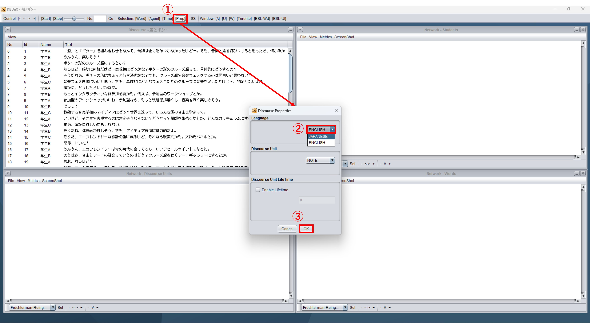
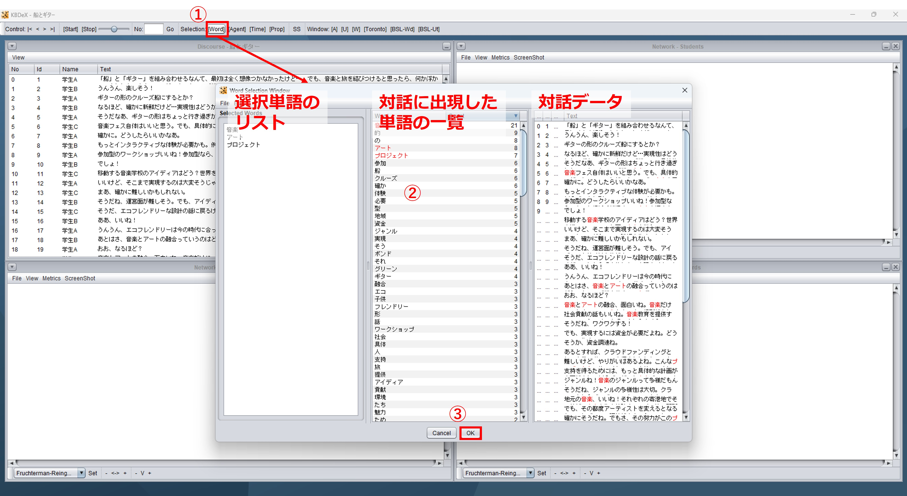

7. 分析単位 (Unit of Analysis) の設定
7.1. 言語設定
KBDeXは英語と日本語の対話データに対応しています．分析を始める前に，KBDeXが対話データを適切に処理できるよう，対話データの言語を設定します．
画面上部のツールバー内「Prop」をクリックし，「Discourse Properties」画面を開きます（図7-1）．対話データの言語に合わせて「Language」を選択します．サンプルデータは日本語なので，今回は「JAPANESE」を選択しましょう．最後に「OK」をクリックして画面を閉じます．
{kind=link}
図7-1 言語設定
7.2. 分析で使用する単語の選択
言語設定が完了したら，分析で使用する単語を選択します．画面上部のツールバー内「Word」をクリックし，「Word Selection Window」画面を開きます（図7-2）．
{kind=link}
図7-2 単語選択画面
「Word Selection Window」画面で，中央の枠に表示された単語一覧から単語をダブルクリックすると，分析で使用する単語として選択できます．選択した単語は赤くハイライトされて表示されます．左の枠で直接単語リストを編集することもできます．
単語の選択が終了したら，「Word Selection Window」画面下の「OK」ボタンをクリックしてウィンドウを閉じます．
単語の選択がうまくいかない場合は，言語設定を見直してみてください（7.1. 言語設定を参照）．
7.3. 単語を選択する上での注意点
分析単語を選択する上で，分析対象として選択したい単語が「Word Selection Window」画面中央の単語一覧に表示されないことがあります．（KBDeXでは，形態素解析ツールのChaSenを用いて単語の分割を行っているためです．）このような場合は，画面左の単語リストを直接編集し，「単語の統合・分割」や「新たな単語の追加」といった処理が必要です．サンプルデータを例に，単語リストを編集してみましょう．
なお，単語リストは「kbdex」内「data」フォルダに「word.txt」として保存されます．このファイルを直接編集してもよいでしょう．
「単語の統合・分割」では，単語一覧に表示された単語を統合・分割し，適切な単語を単語リストに追加します．サンプルデータを読み込むと，「Word Selection Window」画面を開いた時点で「グリーン」「ボンド」「エコ」「フレンドリー」といった単語が単語一覧に表示されています．そこで，画面左の単語リストをクリックし，「グリーンボンド」「エコフレンドリー」という単語を追加しましょう（図7-3）．他にも，「飲料水」や「ゼロウェイスト」といった単語を追加する必要があるでしょう．
逆に，「参加型」や「魅力的」といった単語は，接尾語を除いた「参加」や「魅力」のみを追加すればよいでしょう．ただし，「具体性」と「性」のように，接尾語が別の意味を持つ単語として使用される場合もあるため，注意が必要です．

図7-3 単語リストを直接編集し，単語を追加する例
「新たな単語の追加」では，単語一覧に表示されない単語を同定し，追加します．サンプルデータでは，「エレクトロニック」や「フェス」といった単語を追加する必要があるでしょう．
これらの注意点を「前処理のポイント.txt」にまとめていますので，ご覧ください（4. サンプルデータについても参照）．